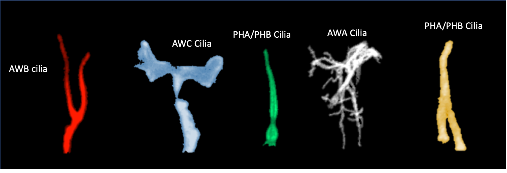
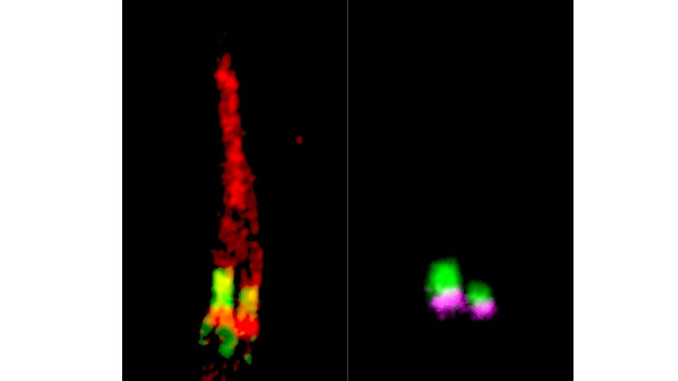
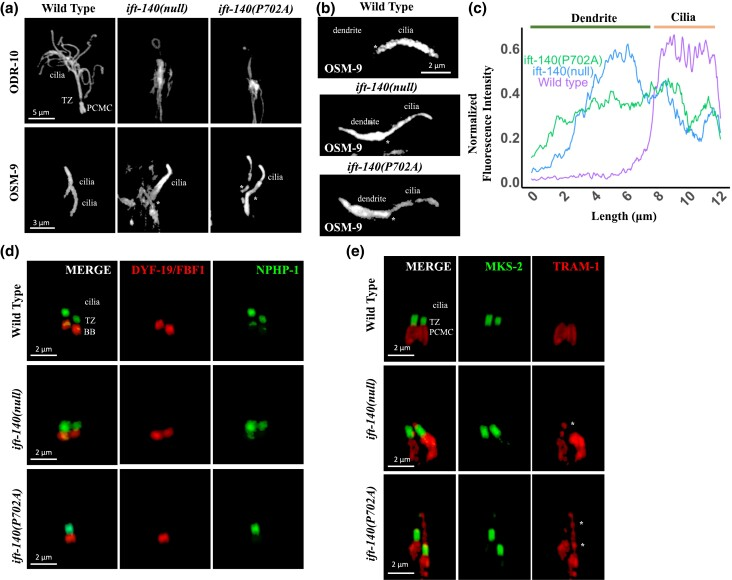
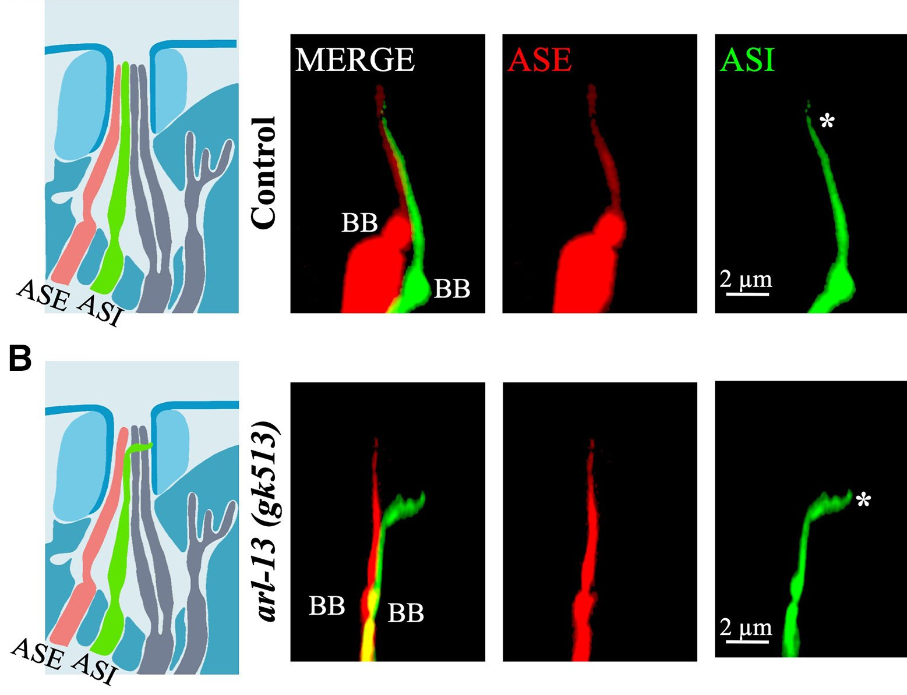

Cover image depicts cilia types in C. elegans.
The Kaplan Lab studies the molecular basis of ciliopathies and rare genetic diseases.
We combine C. elegans genetics, patient-derived cell models, CRISPR/Cas9 genome editing, and integrative bioinformatics approaches to enhance the precision of rare disease diagnosis and to advance our understanding of ciliary biology and ciliopathies.

Current Research
Publications
Contact Us